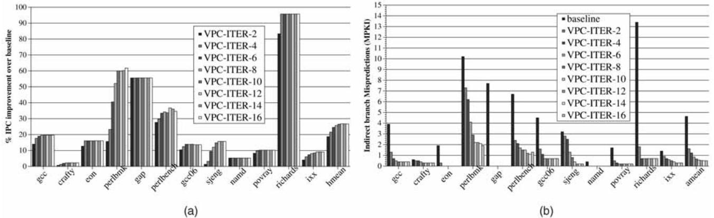
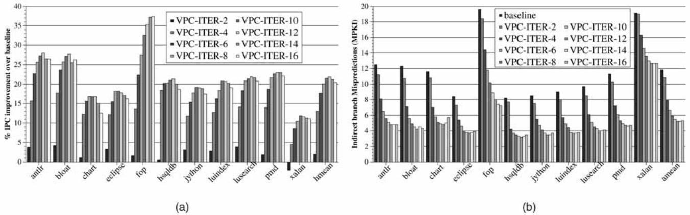
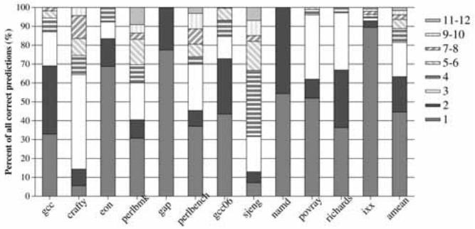
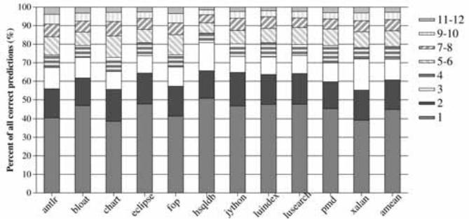
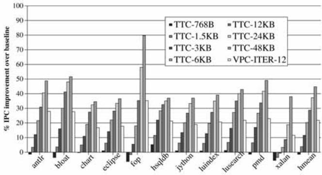
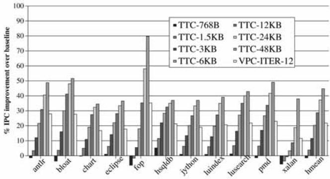
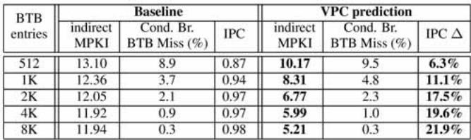

Virtual Program Counter (VPC) Prediction: Very Low Cost Indirect Branch Prediction Using Conditional Branch Prediction Hardwar 论文解析¶
0. 论文基本信息¶
作者 (Authors): Hyesoon Kim, José A. Joao, Onur Mutlu, et al.
发表期刊/会议 (Journal/Conference): IEEE Transactions on Computers
发表年份 (Publication Year): 2009
研究机构 (Affiliations): Georgia Institute of Technology, University of Texas at Austin, Carnegie Mellon University, Intel Corporation
1. 摘要¶
目的
- 解决现代面向对象语言（如 C++、Java）中间接分支（indirect branches）预测精度低、硬件开销大的问题。
- 提出一种低成本的间接分支预测方案，利用处理器中已有的条件分支预测硬件（conditional branch prediction hardware），避免为间接分支预测引入额外的、复杂的专用存储结构。
方法
- 提出 Virtual Program Counter (VPC) prediction 机制，其核心思想是动态去虚拟化（dynamic devirtualization）。
- 将一个间接分支在硬件预测层面视为多个“虚拟”条件分支（virtual conditional branches）的序列。
- 每个虚拟分支拥有一个唯一的 **Virtual PC **(VPCA)，该地址通过将原始 PC 与一个迭代相关的随机常数进行哈希运算得到。
- 预测过程是迭代式的：
- 使用 VPCA 和更新后的虚拟全局历史寄存器（VGHR）访问现有的分支目标缓冲区（BTB）和方向预测器。
- 如果预测结果为 not-taken，则进入下一个虚拟分支的预测。
- 如果预测结果为 taken，则使用 BTB 中对应的地址作为间接分支的目标地址，预测结束。
- 若达到最大迭代次数（MAX_ITER）仍未预测成功，则停顿前端（stall the front-end）。
- 训练算法能根据预测是否正确，动态地在 BTB 中插入新目标或更新现有目标的预测信息，并采用 Unique-LFU 策略管理 BTB 条目。
 Fig. 3. High-level conceptual overview of the VPC predictor.
Fig. 3. High-level conceptual overview of the VPC predictor.
结果
- 在 12 个 C/C++ 应用上，与基于 BTB 的基线预测器相比，VPC 预测（MAX_ITER=12）实现了 26.7% 的平均性能提升，并将平均间接分支 MPKI（每千条指令的误预测数）从 4.63 降至 0.52。
- 在 11 个 DaCapo Java 应用上，VPC 预测实现了 21.9% 的平均性能提升，并将平均间接分支 MPKI 从 11.9 降至 5.2。
- 81% 的 C/C++ 应用和 78.7% 的 Java 应用的正确预测能在 前 3-4 次迭代内完成，表明预测延迟较低。
- 在能效方面，VPC 预测在 C/C++ 和 Java 应用上分别实现了 19% 和 22% 的平均能耗降低，同时几乎不增加处理器的最大功耗。
- 性能表现可与需要大量专用硬件的复杂预测器（如 **Tagged Target Cache **(TTC) 或 Cascaded Predictor）相媲美，但硬件成本极低。
| 应用类型 | 平均性能提升 | 平均能耗降低 | 间接分支 MPKI (基线 → VPC) |
|---|---|---|---|
| C/C++ | 26.7% | 19% | 4.63 → 0.52 |
| Java | 21.9% | 22% | 11.9 → 5.2 |
 Fig. 6. Performance of VPC prediction: (a) IPC improvement and (b) indirect branch MPKI.  Fig. 13. Performance of VPC prediction on Java applications: (a) IPC improvement and (b) indirect branch MPKI.
结论
- VPC prediction 是一种高效且低成本的间接分支预测技术，它巧妙地复用了现有的条件分支预测硬件，避免了为间接分支引入复杂且耗能的专用结构。
- 该技术在面向对象语言（尤其是 Java）密集使用间接分支的场景下，能带来显著的性能和能效提升。
- VPC prediction 具有良好的适应性，其效果会随着底层条件分支预测器准确率的提高而提升，并且可以与编译器的静态去虚拟化（devirtualization）优化协同工作。
- 该工作为未来处理器设计提供了一种实用的思路，有助于弥合面向对象编程的软件工程优势与硬件性能之间的鸿沟。
2. 背景知识与核心贡献¶
研究背景
- 现代 object-oriented languages（如 Java, C++）和 virtual-machine-based runtime systems 广泛使用 polymorphism，其核心实现机制是 dynamically dispatched function calls（即 virtual functions）。
- 这些虚拟函数调用在底层指令集架构中通常被编译为 indirect branches。研究表明，面向对象程序中的间接分支数量远超传统的 C/Fortran 程序。
- Indirect branch prediction 比 conditional branch prediction 困难得多，因为它需要预测一个 N-ary 的目标地址，而非一个二元的跳转方向（taken/not-taken）。
- 由于缺乏高效的硬件支持，indirect branch mispredictions 已成为高性能处理器的关键性能瓶颈，并拉大了面向对象语言与传统语言间的性能差距。
研究动机
- 先前提出的专用 indirect branch predictors（如 tagged target cache, cascaded predictor, PPM predictor）虽然有效，但需要大量额外的硬件存储和复杂逻辑，增加了功耗、面积和设计复杂度。
- 大多数商用高性能处理器因此并未采用这些复杂方案，而是复用现有的 Branch Target Buffer (BTB) 来预测间接分支，但这仅能实现简单的“上次目标”预测，准确率很低（约50%）。
- 作者观察到，现代处理器已经配备了庞大且高度优化的 conditional branch prediction hardware。研究的核心动机是：能否不增加专用硬件，直接利用这套现有设施来高效预测间接分支？
核心贡献
- 提出了一种名为 Virtual Program Counter (VPC) prediction 的全新间接分支预测技术。
- 核心思想：在硬件层面，将单个间接分支动态地视为多个虚拟的 conditional branches（称为 virtual branches）。每个虚拟分支拥有唯一的 Virtual PC (VPCA)，并复用现有的 conditional branch predictor 和 BTB 进行预测。
- 预测过程是迭代的：依次查询每个虚拟分支，若预测为 not-taken 则继续下一个；若预测为 taken，则使用其在 BTB 中存储的目标地址作为最终预测结果。
- 关键优势：
- 零额外存储：间接分支的目标地址直接存储在现有的 BTB 中，无需为间接分支构建独立的、复杂的存储结构。
- 低成本高效益：仅需少量额外的控制逻辑（如寄存器、哈希表），就能获得与大型专用预测器相当的性能。
- 动态适应性：作为一种纯硬件机制，它能自适应地处理任何间接分支，不受编译时分析或静态 profile 的限制，并能应对 dynamic class loading 等运行时行为。
- 实验结果：
- 在 C/C++ 应用上，相比 BTB 基线，平均性能提升 26.7%，平均能耗降低 19%。
- 在 Java DaCapo 应用上，平均性能提升 21.9%，平均能耗降低 22%。
- VPC 预测的准确性与底层 conditional branch predictor 的准确性正相关，可与任何现有条件分支预测机制协同工作。
 Fig. 1. Indirect branch mispredictions in Windows applications: (a) MPKI and (b) percent of mispredictions due to indirect branches.
Fig. 3. High-level conceptual overview of the VPC predictor.
Fig. 1. Indirect branch mispredictions in Windows applications: (a) MPKI and (b) percent of mispredictions due to indirect branches.
Fig. 3. High-level conceptual overview of the VPC predictor.
3. 核心技术和实现细节¶
0. 技术架构概览¶
整体技术架构
VPC (Virtual Program Counter) Prediction 的核心思想是复用现有的条件分支预测硬件来处理间接分支，从而避免为间接分支预测引入额外的、复杂的专用存储结构。其架构巧妙地将一个间接分支在硬件预测层面“动态地”视为一连串虚拟的条件分支。
-
基本概念:
- 虚拟分支 (Virtual Branch): 这些是仅对处理器的分支预测单元可见的、逻辑上的条件分支。它们不存在于程序二进制代码中，不影响程序的实际执行流。
- 虚拟程序计数器 (Virtual PC, VPCA): 为每个虚拟分支分配一个唯一的、伪造的 PC 地址，用于索引现有的条件分支方向预测器 (Conditional Branch Direction Predictor) 和 BTB (Branch Target Buffer)。
- 虚拟全局历史寄存器 (Virtual GHR, VGHR): 为每个虚拟分支提供上下文（分支历史）信息，以增强预测准确性。
-
预测流程:
- 处理器在取指阶段遇到一个间接分支。
- 预测过程开始迭代，MAX_ITER 参数限定了最大迭代次数（即最多尝试多少个虚拟分支）。
- 第一次迭代: 使用间接分支的真实 PC 作为 VPCA，使用当前的 GHR 作为 VGHR，访问 BTB 和方向预测器。
- 如果 BTB 命中且方向预测器预测为 taken，则使用 BTB 返回的地址作为预测目标，预测结束。
- 如果预测为 not-taken，则进入下一次迭代。
- 后续迭代 (第 N 次):
- VPCA 通过将原始 PC 与一个预定义的、与迭代次数相关的随机化常数 (HASHVAL[N]) 进行哈希运算得到。
- VGHR 通过对上一次的 VGHR 进行左移一位（模拟前一个虚拟分支为 not-taken）得到。
- 重复上述预测过程，直到某个虚拟分支被预测为 taken，或达到 MAX_ITER 次迭代仍未成功，此时处理器停顿 (stall) 直到间接分支的目标地址在执行阶段被解析出来。
Fig. 3. High-level conceptual overview of the VPC predictor.
-
训练流程:
- 当间接分支在提交阶段被解析后，VPC 预测器会根据预测是否正确进行训练。
- 预测正确时: 所有在成功预测之前的虚拟分支都在方向预测器中被训练为 not-taken，而成功预测的那个虚拟分支则被训练为 taken，并更新其在 BTB 中条目的替换策略位。
- 预测错误时 (Wrong-target): 如果正确的目标地址已存在于某个虚拟分支的 BTB 条目中，则将该虚拟分支的方向预测器训练为 taken，其余已检查的虚拟分支训练为 not-taken。
- 预测错误时 (No-target): 如果正确的目标地址不在任何虚拟分支的 BTB 条目中，则需要将其插入 BTB。插入位置的选择策略（如 Unique-LFU）会影响性能，论文默认采用 LFU（Least Frequently Used）策略来替换使用频率最低的条目。
-
硬件开销:
- VPC 预测器的硬件成本极低，主要新增内容包括：
- 用于预测和训练的少量寄存器（存储 iter, VPCA, VGHR）。
- 一个小型的硬编码 HASHVAL 表（大小为 MAX_ITER，通常不超过16）。
- 在流水线中携带 predicted_iter 值。
- 关键优势: 无需为间接分支目标地址维护任何额外的专用存储表，所有目标地址都自然地存储在现有的 BTB 中。
- VPC 预测器的硬件成本极低，主要新增内容包括：
-
与编译器优化的关系:
- VPC 预测可以被看作是一种硬件实现的、动态的 devirtualization (去虚拟化)。
- 它克服了编译器静态 devirtualization 的局限性，如需要静态分析/剖析、缺乏运行时适应性、可能增加代码体积等。
- VPC 预测与编译器优化是正交且互补的，即使在经过编译器优化的代码上，VPC 依然能带来显著的性能提升。
1. Virtual Program Counter (VPC) Prediction¶
核心观点
- Virtual Program Counter (VPC) Prediction 的核心思想是将一个间接分支 (indirect branch) 在硬件预测层面动态地“虚拟化”为一个由多个虚拟条件分支 (virtual conditional branches) 组成的序列。
- 该机制巧妙地复用处理器中已有的、高度优化的条件分支预测器 (conditional branch predictor) 和 BTB (Branch Target Buffer)，无需为间接分支目标地址预测增加任何专用的、复杂的存储结构，从而实现了极低的硬件成本。
实现原理与算法流程
- 虚拟分支的概念：每个虚拟分支在软件层面并不存在，仅对硬件的分支预测单元可见。每个虚拟分支拥有自己唯一的虚拟程序计数器 (Virtual PC, VPCA) 和关联的虚拟全局历史寄存器 (Virtual GHR, VGHR) 值，用于索引现有的预测器和BTB。
- 预测过程 (Algorithm 1)：
- 初始化：
iter = 1,VPCA = PC(原始间接分支地址),VGHR = GHR(当前全局历史)。 - 迭代循环：
- 使用
(VPCA, VGHR)访问 BTB 和条件分支方向预测器。 - 如果 BTB 命中 且方向预测器预测结果为 TAKEN，则使用 BTB 返回的目标地址作为预测结果，预测成功并结束。
- 否则（BTB 未命中、预测为 NOT-TAKEN 或
iter > MAX_ITER），更新VPCA和VGHR并进入下一次迭代。VPCA更新：通过将原始PC与一个预定义的、基于iter的随机化常量 (HASHVAL[iter]) 进行哈希运算得到，确保不同迭代的VPCA唯一。VGHR更新：简单地左移一位，模拟前一个虚拟分支被预测为 NOT-TAKEN 的历史。
- 使用
- 终止条件：成功预测到目标，或达到最大迭代次数
MAX_ITER，或发生 BTB 未命中。若未能成功预测，则前端流水线停顿 (STALL)，等待间接分支在执行阶段解析出真实目标。
- 初始化：
- 训练过程：
- 正确预测时 (Algorithm 2)：所有在成功预测前的虚拟分支都被训练为 NOT-TAKEN，而成功预测的那个虚拟分支被训练为 TAKEN，并更新其 BTB 条目的替换策略位。
- 错误预测时 (Algorithm 3)：
- Wrong-target：遍历所有虚拟分支，找到存储了正确目标地址的那个，并将其方向预测器训练为 TAKEN。
- No-target：如果所有虚拟分支的 BTB 条目中都没有正确目标，则需要将正确目标插入 BTB。插入位置的选择策略（如 Unique-LFU）会影响性能，论文默认选择最近最少使用 (LFU) 值最小的条目进行替换。
 Fig. 4. VPC prediction example: source, assembly, and the corresponding virtual branches.
Fig. 4. VPC prediction example: source, assembly, and the corresponding virtual branches.
 TABLE 1 Possible VPC Predictor States and Outcomes When Branch in Fig. 4b is Predicted
TABLE 1 Possible VPC Predictor States and Outcomes When Branch in Fig. 4b is Predicted
关键参数设置与硬件成本
- MAX_ITER：这是最关键的参数，它决定了为一个间接分支最多可以维护多少个不同的目标地址（即虚拟分支的数量）。
- 实验表明，
MAX_ITER=12能在 C/C++ 和 Java 应用上取得最佳性能平衡。 - 过大的
MAX_ITER会增加 BTB 的冲突缺失，并可能导致预测延迟增加。
- 实验表明，
- 硬件开销极小：
- 主要新增硬件包括：用于存储
iter、VPCA、VGHR的少量寄存器（预测和训练各一套）。 - 一个小型的硬编码随机化哈希表 (HASHVAL)，大小为
MAX_ITER。 - 在流水线中为每个间接分支携带一个
predicted_iter字段。 - 无需为间接分支目标地址增加任何新的、独立的存储表。
- 主要新增硬件包括：用于存储
输入输出关系及在整体中的作用
- 输入：
- 间接分支的 PC (Program Counter) 地址。
- 当前的 GHR (Global History Register) 状态。
- 现有的 BTB 和 条件分支方向预测器 的状态。
- 输出：
- 预测的目标地址 (Target Address)。
- 或者，在无法预测时，发出一个停顿 (STALL) 信号。
- 在处理器前端的作用：
- 无缝集成：VPC 预测器完全构建在现有条件分支预测硬件之上，对指令获取和解码逻辑的改动极小。
- 提升性能：通过显著降低间接分支 MPKI (Mispredictions Per Kilo Instructions)，减少了因错误路径执行导致的流水线冲刷，从而大幅提升了 IPC (Instructions Per Cycle)。
- 降低能耗：减少了错误路径上指令的获取、解码和执行，直接降低了处理器的整体能量消耗和能量延迟积 (EDP)。
- 赋能面向对象语言：有效缓解了由虚函数调用 (virtual function calls) 和动态分派 (dynamic dispatch) 导致的性能瓶颈，使得使用 C++、Java 等现代面向对象语言编写的程序能获得接近传统语言的性能，鼓励了更高质量的软件开发实践。
性能与能效数据摘要
| 应用类型 | 平均性能提升 (IPC) | 平均能耗降低 | 平均 EDP 降低 | 关键指标 (MPKI) |
|---|---|---|---|---|
| C/C++ 应用 | 26.7% | 19% | 42% | 从 4.63 降至 0.52 |
| Java DaCapo 应用 | 21.9% | 22% | 36% | 从 11.9 降至 5.2 |
- 预测效率：在
MAX_ITER=12时，81% 的 C/C++ 正确预测在前3次迭代内完成；对于目标更多的 Java 应用，78.7% 的正确预测在前4次迭代内完成。这表明大多数预测都能快速完成，引入的停顿周期很少。
 Fig. 7. Distribution of the number of iterations (for correct predictions) (MAX_ITER=12).  Fig. 14. Distribution of the number of iterations (for correct predictions) in the Java programs (MAX_ITER¼12).
2. Virtual Branch and Virtual PC (VPCA)¶
Virtual Branch 与 Virtual PC (VPCA) 的核心机制
- Virtual Branch（虚拟分支） 并非真实存在于程序二进制中的指令，而是一种纯硬件层面的概念。它由 VPC 预测器在预测阶段动态创建，目的是将一个难以预测的间接分支 (indirect branch) 转化为一系列易于处理的条件分支 (conditional branch)。
- 每个 Virtual Branch 在硬件看来就是一个标准的条件分支，拥有自己独立的预测方向 (taken/not-taken) 和目标地址 (target address)。
- Virtual PC (VPCA) 是分配给每个 Virtual Branch 的唯一标识符。它的核心作用是让处理器能够使用现有的条件分支预测硬件（包括方向预测器和 BTB）来区分并预测不同的 Virtual Branch。
VPCA 的生成算法与流程
- VPCA 的生成是一个迭代过程，其详细逻辑在论文的 Algorithm 1 中定义。
- 初始迭代 (iter = 1):
VPCA被直接设置为原始间接分支的 PC 地址。VGHR(Virtual Global History Register) 被设置为当前的 GHR 值。
- 后续迭代 (iter > 1):
VPCA通过一个哈希函数计算得出：VPCA = Hash(PC, iter)。- 论文中具体实现为：
VPCA = PC XOR HASHVAL[iter]，其中 HASHVAL 是一个硬编码的、包含随机数的硬件表，表的大小由 MAX_ITER 参数决定。 VGHR则通过对上一轮的VGHR进行左移一位来更新，这模拟了前一个 Virtual Branch 被预测为 not-taken 的历史。
- 这个迭代过程会持续进行，直到以下任一条件满足：
- 某个 Virtual Branch 被预测为 taken，此时其 BTB 中存储的目标地址即为最终预测结果。
- 迭代次数达到预设上限 MAX_ITER。
- 在访问 BTB 时发生 miss。
Fig. 4. VPC prediction example: source, assembly, and the corresponding virtual branches.
关键参数与硬件成本
- MAX_ITER: 这是一个至关重要的设计参数，它决定了：
- 一个间接分支最多可以关联多少个不同的目标地址（即 Virtual Branch 的数量）。
- 预测过程可能消耗的最大周期数。
- 论文实验表明，MAX_ITER=12 能在性能和开销之间取得最佳平衡。
- HASHVAL 表: 一个小型的只读存储器，存储 MAX_ITER 个随机常量。论文指出其硬件成本极低。
- 额外寄存器: 需要少量寄存器来在预测和训练过程中保存
iter、VPCA和VGHR的当前值。
输入输出关系及在整体架构中的作用
- 输入:
- 间接分支的原始 PC 地址。
- 当前的全局历史寄存器 GHR 值。
- 输出:
- 预测阶段: 一个预测的目标地址，或者一个STALL信号（表示无法预测）。
- 训练阶段: 对 BTB 和条件分支方向预测器进行更新，以反映真实的分支行为。
- 在整体架构中的作用:
- 复用现有硬件: VPC 预测的核心价值在于完全复用处理器中已有的、高度优化的条件分支预测器和 BTB，避免了为间接分支预测构建专用、复杂的存储结构（如 Target Cache）。
- 动态去虚拟化 (Dynamic Devirtualization): 它在硬件层面动态地实现了类似编译器去虚拟化 (devirtualization) 的效果，但无需任何静态分析或配置文件信息，具有极强的适应性 (Adaptivity)。
- 降低前端复杂度: 通过将复杂的 N-ary 间接目标预测问题，转化为一系列简单的二元 (taken/not-taken) 条件分支预测问题，极大地简化了处理器前端的设计。
训练机制对 VPCA 的影响
- 训练算法（Algorithm 2 & 3）确保了预测结构的准确性。
- 当预测错误且正确的目标地址不在 BTB 中（No-target case）时，训练逻辑需要决定将新目标插入到哪个 Virtual Branch 的槽位中。
- 论文评估了多种策略（Naive-Insert, Unique-Random, Unique-LRU），最终选择了 Unique-LFU（替换使用频率最低的目标）。这个选择直接影响了哪个
VPCA会被用来存储新的目标地址，从而影响未来预测的顺序和效率。
3. Iterative Prediction and Training Algorithms¶
VPC预测算法 (Algorithm 1)
- VPC预测是一个迭代过程，每次迭代对应一个虚拟分支 (virtual branch) 的预测。
- 输入:
PC: 间接分支的真实程序计数器地址。GHR: 全局历史寄存器值，记录了最近分支的执行历史。MAX_ITER: 最大迭代次数，决定了为单个间接分支最多能存储多少个目标地址。
- 初始化: 第一次迭代 (
iter = 1) 使用真实的PC作为虚拟程序计数器地址 (VPCA)，并使用当前的GHR作为虚拟全局历史寄存器 (VGHR)。 - 核心循环:
- 使用当前的
VPCA和VGHR访问BTB和条件分支方向预测器。 - 如果 BTB 命中 (
pred_target有效) 且方向预测器预测为 TAKEN，则预测成功，将pred_target作为下一条取指地址，并结束预测。 - 否则（即 BTB 未命中、方向预测为 NOT-TAKEN 或已达到
MAX_ITER），进入下一次迭代或触发STALL。
- 使用当前的
- 迭代更新:
VPCA通过哈希函数更新：VPCA = Hash(PC, iter)。论文中使用一个硬编码的随机数表HASHVAL[iter]来实现，确保每个虚拟分支有唯一的、可重现的地址。VGHR被左移一位（相当于在历史末尾添加一个 NOT-TAKEN 位），以反映上一个虚拟分支未被采用。
- 终止条件: 预测成功（遇到 TAKEN）、达到
MAX_ITER或 BTB 未命中。若未能成功预测，则前端流水线STALL，直到间接分支在后端被解析出真实目标。 - 作用: 该算法巧妙地复用了现有的条件分支预测硬件，将一个N路的间接分支目标预测问题，转化为一系列二元的（TAKEN/NOT-TAKEN）虚拟条件分支预测问题。
Fig. 4. VPC prediction example: source, assembly, and the corresponding virtual branches.
VPC训练算法
- 训练的目标是根据间接分支的实际执行结果，更新预测器状态，使其在未来能做出更准确的预测。
- 关键区分: 训练逻辑首先需要判断预测失败的类型：
- Wrong-target: 正确的目标地址存在于某个虚拟分支的 BTB 条目中，但该虚拟分支的方向被错误地预测为 NOT-TAKEN。
- No-target: 正确的目标地址根本不在任何虚拟分支的 BTB 条目中。
- 正确预测时的训练 (Algorithm 2):
- 对于所有在成功预测前的虚拟分支（即
iter < predicted_iter），将其方向预测器条目训练为 NOT-TAKEN。 - 对于成功预测的那个虚拟分支（即
iter = predicted_iter），将其方向预测器条目训练为 TAKEN，并更新其 BTB 条目的替换策略位（如 LRU/LFU）。
- 对于所有在成功预测前的虚拟分支（即
- 错误预测时的训练 (Algorithm 3):
- 迭代检查: 按预测时的相同顺序，依次检查每个虚拟分支的 BTB 条目。
- Wrong-target 处理: 一旦发现某个虚拟分支的 BTB 目标与实际目标匹配，立即将其方向预测器训练为 TAKEN，更新其 BTB 替换位，并停止后续检查。
- No-target 处理: 如果遍历完所有
MAX_ITER个虚拟分支都未找到正确目标，则需要将正确目标插入 BTB。- 插入位置选择: 优先选择在预测阶段发生 BTB miss 的那个虚拟分支位置。如果没有 miss，则选择 BTB 条目中使用频率最低 (Least-frequently-used, LFU) 的位置进行替换。论文实验表明 Unique-LFU 策略效果最佳。
- 插入后训练: 将新插入的虚拟分支的方向预测器训练为 TAKEN。
- 作用: 训练算法确保了预测器能够动态学习和适应间接分支的目标模式，通过调整虚拟分支的“taken”顺序和维护 BTB 中的目标集合，来逼近最优的预测效果。
TABLE 1 Possible VPC Predictor States and Outcomes When Branch in Fig. 4b is Predicted
关键参数与性能影响
- MAX_ITER: 这是 VPC 预测机制中最关键的参数，它直接决定了：
- 单个间接分支可以拥有的最大目标数量。
- 预测延迟的上限（最坏情况下需要
MAX_ITER个周期）。 - 对 BTB 资源的压力（更多的虚拟分支意味着更多的 BTB 条目占用）。
- 实验结果表明，MAX_ITER=12 在所测试的 C/C++ 和 Java 应用中提供了最佳的性能平衡点。
- 对于目标较少的程序（如
eon,gap），较小的MAX_ITER（如2或4）就足以消除大部分误预测。 - 对于目标极多的程序（如
perlbench, Java 应用），增大MAX_ITER能持续降低 MPKI，但过大的值（>12）会因 BTB 冲突缺失 (conflict misses) 增加而导致性能下降。
- 对于目标较少的程序（如
- 预测效率: 绝大多数（C/C++ 约 81%，Java 约 78.7%）的正确预测在前 3-4 次迭代内完成，说明平均预测延迟很低。
Fig. 7. Distribution of the number of iterations (for correct predictions) (MAX_ITER=12). Fig. 14. Distribution of the number of iterations (for correct predictions) in the Java programs (MAX_ITER¼12).
4. Dynamic Devirtualization without Compiler Support¶
核心观点：VPC预测的动态去虚拟化机制
VPC (Virtual Program Counter) 预测的核心创新在于，它在硬件层面动态地将一个间接分支（indirect branch）模拟为多个“虚拟”的条件分支（virtual conditional branches），从而复用现有的、高度优化的条件分支预测硬件（包括方向预测器和BTB）来预测间接分支的目标地址。这一过程完全无需编译器支持，不依赖静态分析或运行时剖析（profiling），并能自适应程序行为的变化。
-
基本原理：
- 一个间接分支在软件中只存在一次，但在硬件预测时，VPC机制将其视为一个由多个虚拟分支组成的序列。
- 每个虚拟分支都有一个唯一的虚拟程序计数器（VPCA），该VPCA是通过对原始间接分支的PC进行哈希变换生成的。
- 硬件使用这个VPCA去查询现有的条件分支方向预测器（如gshare, perceptron等）和分支目标缓冲区（BTB）。
- 如果方向预测器预测当前虚拟分支为“taken”，则使用BTB中与该VPCA关联的目标地址作为间接分支的预测目标，预测结束。
- 如果预测为“not-taken”，则硬件自动移动到序列中的下一个虚拟分支，并用其对应的VPCA重复预测过程。
-
算法流程（基于Algorithm 1）：
- 初始化：
iter = 1,VPCA = PC(原始间接分支地址),VGHR = GHR(全局历史寄存器值)。 - 迭代预测：
- 使用
VPCA访问BTB，获取pred_target。 - 使用
VPCA和VGHR访问条件分支方向预测器，获取pred_dir。 - 终止条件1（成功预测）：如果
pred_target存在（BTB命中）且pred_dir为TAKEN，则预测完成，下一取指地址为pred_target。 - 终止条件2（预测失败）：如果
pred_target不存在（BTB miss）或iter > MAX_ITER，则预测失败，前端STALL，等待间接分支在执行阶段解析出真实目标。 - 继续迭代：如果以上条件均不满足，则更新
VPCA = Hash(PC, iter)，VGHR = Left-Shift(VGHR)（模拟前一个虚拟分支为not-taken），iter++，进入下一轮循环。
- 使用
- 初始化：
Fig. 3. High-level conceptual overview of the VPC predictor.
- 关键参数设置：
- MAX_ITER：这是最重要的参数，它定义了为一个间接分支最多尝试预测多少个虚拟分支。它直接决定了该间接分支在BTB中可以存储多少个不同的目标地址。
- 论文实验表明，MAX_ITER=12 能在C/C++和Java应用上取得最佳性能平衡。
- 过小的
MAX_ITER无法覆盖多态性高的间接分支；过大的MAX_ITER会增加BTB冲突（conflict misses）并可能因迭代次数过多而引入额外延迟。
- HASHVAL：一个硬编码的、包含
MAX_ITER个条目的随机数表。用于生成不同迭代次数对应的唯一VPCA，确保不同虚拟分支能映射到预测结构的不同位置。
- MAX_ITER：这是最重要的参数，它定义了为一个间接分支最多尝试预测多少个虚拟分支。它直接决定了该间接分支在BTB中可以存储多少个不同的目标地址。
训练与自适应机制
VPC预测的自适应能力来源于其精细的训练算法，该算法在间接分支被提交（commit）后更新预测结构。
-
正确预测时的训练（Algorithm 2）：
- 对于序列中除最后一个（即预测正确的那个）之外的所有虚拟分支，将其在方向预测器中训练为NOT-TAKEN。
- 对于最后一个虚拟分支，将其在方向预测器中训练为TAKEN，并更新其在BTB中的替换策略位（如LFU计数器）。
-
错误预测时的训练（Algorithm 3）：
- Wrong-target情况：正确的目标地址已存在于某个虚拟分支的BTB项中，但方向预测器错误地预测其为NOT-TAKEN。训练逻辑会找到该项，并将其方向预测器更新为TAKEN。
- No-target情况：正确的目标地址不在任何虚拟分支的BTB项中。此时需要将新目标插入BTB。
- 插入位置的选择至关重要。论文采用Unique-LFU策略：优先选择一个BTB miss的虚拟分支槽位；若无miss，则替换掉LFU（Least-Frequently-Used）值最小的虚拟分支槽位。这保证了BTB空间的有效利用，保留高频目标。
输入输出关系及整体作用
-
输入：
- PC：间接分支指令的程序计数器地址。
- GHR：当前的全局分支历史。
- BTB和条件分支预测器的状态：这是VPC机制复用的核心硬件资源。
-
输出：
- 预测目标地址（
next_PC）：如果在MAX_ITER次迭代内成功预测。 - STALL信号：如果预测失败，通知前端暂停取指。
- 预测目标地址（
-
在处理器流水线中的作用：
- VPC预测发生在取指（Fetch）阶段，与常规分支预测并行。
- 它通过将复杂的N路间接目标预测问题，巧妙地转化为一系列简单的二元（taken/not-taken）条件分支预测问题。
- 其最大优势在于零额外存储开销：所有间接分支的目标地址都存储在原有的BTB中，无需像TTC（Tagged Target Cache）等方案那样引入专用的、庞大的间接目标存储结构。
- 实验数据显示，在C/C++应用上平均提升26.7%性能，在Java DaCapo应用上平均提升21.9%性能，同时显著降低能耗。这证明了其作为一种低成本、高效益的间接分支处理方案的巨大价值。
5. Low-Cost Hardware Implementation¶
VPC预测的低成本硬件实现原理
VPC (Virtual Program Counter) 预测的核心思想是将一个间接分支在硬件层面动态地“虚拟化”为多个conditional branch，从而复用处理器中已经存在的、高度优化的conditional branch prediction hardware（包括方向预测器和BTB），避免了为间接分支目标地址构建专用存储结构的巨大开销。
-
虚拟分支 (Virtual Branch) 的概念：
- 虚拟分支并非真实存在于程序二进制中的指令，而是VPC预测机制在硬件内部创建的逻辑实体。
- 每个虚拟分支都拥有自己唯一的Virtual PC Address (VPCA) 和关联的Virtual Global History Register (VGHR) 值，用于索引现有的分支预测结构。
- 硬件依次预测这些虚拟分支：如果预测为 not-taken，则继续预测序列中的下一个；如果预测为 taken，则使用该虚拟分支在BTB中对应的target address作为间接分支的预测目标。
-
关键硬件组件与成本：
- 寄存器开销极小：仅需少量额外寄存器来存储预测和训练过程中的迭代计数器 (
iter)、当前VPCA和VGHR值。 - 小型硬编码哈希表：一个名为
HASHVAL的硬编码表，包含MAX_ITER个（实验表明不超过16）32位随机数。该表用于在每次迭代中生成新的、唯一的VPCA，以区分不同的虚拟分支。 - 复用现有BTB：所有间接分支的目标地址都直接存储在现有的Branch Target Buffer (BTB) 中，每个目标地址通过其对应的VPCA进行索引。这完全消除了对专用间接分支目标缓存的需求。
- 简单组合逻辑：用于计算VPCA（
PC XOR HASHVAL[iter]）和更新VGHR（左移一位，模拟前一个虚拟分支为not-taken）。这些计算不在关键路径上，因此不会影响预测延迟。
- 寄存器开销极小：仅需少量额外寄存器来存储预测和训练过程中的迭代计数器 (
Fig. 3. High-level conceptual overview of the VPC predictor.
VPC预测与训练算法流程
VPC的运作分为预测 (Prediction) 和 训练 (Training) 两个阶段。
-
预测算法 (Algorithm 1)：
- 初始化：
iter = 1,VPCA = PC(间接分支的真实PC),VGHR = GHR(全局历史寄存器的当前值)。 - 迭代循环：
- 使用
VPCA访问BTB获取预测目标 (pred_target)。 - 使用
VPCA和VGHR访问条件分支方向预测器获取预测方向 (pred_dir)。 - 成功条件：如果
pred_target存在（BTB命中）且pred_dir为 TAKEN，则预测成功，使用pred_target作为下一条取指地址。 - 继续条件：如果
pred_dir为 NOT-TAKEN，则更新VPCA = Hash(PC, iter)和VGHR = Left-Shift(VGHR)，iter++，进入下一次迭代。 - 失败/停顿条件：如果
iter > MAX_ITER或发生BTB miss，则预测失败，前端停顿直到间接分支在执行阶段被解析。
- 使用
- 初始化：
-
训练算法：
- 正确预测时 (Algorithm 2)：对于预测序列中除最后一个（正确）虚拟分支外的所有分支，将其方向预测器条目训练为 NOT-TAKEN；将最后一个分支的方向预测器训练为 TAKEN，并更新其BTB条目的替换策略位（如LFU）。
- 错误预测时 (Algorithm 3)：
- Wrong-target：遍历所有虚拟分支，找到存储了正确目标地址的那个，并将其方向预测器训练为 TAKEN。
- No-target：如果正确目标未在任何虚拟分支的BTB条目中找到，则需要将其插入BTB。插入位置的选择策略（如 Unique-LFU）对性能有影响，它决定了新目标在虚拟分支序列中的“优先级”。
参数设置与性能权衡
-
核心参数
MAX_ITER：- 它定义了为单个间接分支最多可以创建多少个虚拟分支，也即BTB中最多能为该分支缓存多少个不同目标。
- 实验表明，
MAX_ITER=12在C/C++和Java基准测试中均能提供最佳性能。 - 权衡：增大
MAX_ITER可以捕获更多目标，减少misprediction，但会增加BTB的conflict misses（尤其在Java等高间接分支密度的应用中），并且会增加预测所需的平均迭代次数（即前端停顿周期）。
-
输入输出关系：
- 输入：间接分支的 PC 地址和当前的 GHR 值。
- 输出：预测的 target address 或一个 STALL 信号。
- 在整体中的作用：VPC预测器作为一个低开销的前端模块，无缝集成到现有的取指和分支预测流水线中。它显著降低了Indirect Branch MPKI（从4.63降至0.52），从而减少了由错误路径取指和执行引起的pipeline flushes，最终提升了IPC并降低了energy consumption。
与其他方案的硬件成本对比
| 方案 | 目标地址存储 | 额外硬件复杂度 | 能量效率 |
|---|---|---|---|
| Baseline (BTB-only) | BTB (Last-target) | 无 | 低 (高MPKI) |
| Tagged Target Cache (TTC) | 专用目标缓存 (KB级) | 高 (需独立结构、标签、多路选择器) | 低 (随缓存增大而恶化) |
| VPC Prediction | 复用现有BTB | 极低 (仅寄存器、小哈希表、简单逻辑) | 高 (减少flushes，自身开销小) |
如图所示，VPC预测在几乎不增加硬件复杂度的前提下，其性能可媲美数KB大小的专用预测器，同时在energy-delay product (EDP) 上优势巨大。
 Fig. 10. Effect of VPC on energy/power consumption.
Fig. 10. Effect of VPC on energy/power consumption.
4. 实验方法与实验结果¶
实验设置
- 评估平台为基于 Pin 和 iDNA 的周期精确 x86 模拟器，分别用于 C/C++ 和 Java 应用。
- 基线处理器配置如
 TABLE 2 Baseline Processor Configuration 所示，是一个高性能的乱序执行核心，具有 32KB BTB、16KB gshare 条件分支预测器、32-entry RAS 等。
TABLE 2 Baseline Processor Configuration 所示，是一个高性能的乱序执行核心，具有 32KB BTB、16KB gshare 条件分支预测器、32-entry RAS 等。 - C/C++ 基准测试集：包含 5 个 SPEC CPU2000 INT、5 个 SPEC CPU2006 INT/C++ 基准测试，以及 2 个额外的 C 基准测试（GAP, NAMD），共 12 个。所有程序均使用 ICC -O3 编译。
- Java 基准测试集：完整的 DaCapo 基准测试套件（11 个应用），在 Sun J2SE 1.4.2_15 JRE 上运行。
- 所有实验均使用 reference/small 输入集，并通过 Pinpoints 选择具有代表性的 2 亿条 x86 指令进行模拟。
- 基线间接分支预测器：采用传统的 BTB-based last-target predictor，即假设下一次跳转目标与上一次相同。
- VPC 预测器关键参数：
MAX_ITER（最大虚拟分支尝试次数）是主要变量，在实验中从 2 到 16 进行调整。
结果数据
- 性能提升：
- 在 12 个 C/C++ 应用上，VPC 预测（
MAX_ITER=12）平均 IPC 提升 26.7%。 - 在 11 个 Java DaCapo 应用上，VPC 预测（
MAX_ITER=12）平均 IPC 提升 21.9%。
- 在 12 个 C/C++ 应用上，VPC 预测（
- 错误预测率降低：
- C/C++ 应用的平均间接分支 MPKI（每千条指令的错误预测数）从基线的 4.63 降至 0.52。
- Java 应用的平均间接分支 MPKI 从基线的 11.9 降至 5.2。
- 能效提升：
- C/C++ 应用的平均 整体能耗 降低 19%，能量延迟积 (EDP) 降低 42%。
- Java 应用的平均 整体能耗 降低 22%，EDP 降低 36%。
- VPC 预测几乎不增加 最大功耗（\<0.1%），而专用预测器（如 12KB TTC）则会显著增加功耗（>2%）。
- 预测效率：
- 在 C/C++ 应用中，44.6% 的正确预测在第一次迭代完成，81% 在三次迭代内完成 ( Fig. 7. Distribution of the number of iterations (for correct predictions) (MAX_ITER=12).)。
- 在 Java 应用中，44.8% 的正确预测在第一次迭代完成，78.7% 在四次迭代内完成 ( Fig. 14. Distribution of the number of iterations (for correct predictions) in the Java programs (MAX_ITER¼12).)。
- 与其他预测器的对比：
- VPC 预测的性能等同于一个 3-6 KB 的 Tagged Target Cache (TTC) 或 5.5-11 KB 的 Cascaded Predictor，但无需任何额外的专用存储结构 ( Fig. 15. Performance of VPC prediction versus tagged target cache.,
 Fig. 16. Performance of VPC prediction versus cascaded predictor.)。
Fig. 16. Performance of VPC prediction versus cascaded predictor.)。
- VPC 预测的性能等同于一个 3-6 KB 的 Tagged Target Cache (TTC) 或 5.5-11 KB 的 Cascaded Predictor，但无需任何额外的专用存储结构 ( Fig. 15. Performance of VPC prediction versus tagged target cache.,
消融实验
MAX_ITER参数敏感性分析：- 对于目标较少的程序（如 eon, gap），较小的
MAX_ITER（如 2 或 4）即可消除大部分错误预测 ( Fig. 6. Performance of VPC prediction: (a) IPC improvement and (b) indirect branch MPKI.)。 - 对于目标极多的程序（如 perlbmk, perlbench, sjeng），性能随
MAX_ITER增大而持续提升，但过大的MAX_ITER（>12）会导致 BTB 冲突缺失 增加和 预测延迟 变长，反而使性能下降。 - 最优
MAX_ITER值为 12，在此值下，VPC 在所有基准测试上取得了最佳的性能平衡。
- 对于目标较少的程序（如 eon, gap），较小的
- VPC 训练策略对比：
- 实验比较了四种将正确目标地址插入 BTB 的策略 (
 Fig. 9. Performance impact of different VPC training schemes.)：
Fig. 9. Performance impact of different VPC training schemes.)：- Naive-Insert-MAXITER: 实现简单，但会导致 BTB 中目标地址冗余，降低空间效率。
- Unique-Random: 随机替换。
- Unique-LRU: 替换最近最少使用的条目。
- Unique-LFU: 替换最不频繁使用的条目（默认策略）。
- 结果表明，Unique-LFU 策略性能最佳，因为它保留了更可能在未来被使用的高频目标。
- 实验比较了四种将正确目标地址插入 BTB 的策略 (
- 微架构参数影响：
- BTB 大小：VPC 的性能增益随 BTB 容量增大而提高。在 Java 应用这种高冲突场景下，小 BTB（如 512-entry）会严重限制 VPC 的效果 ( TABLE 6 Effect of Different BTB Sizes in Java Applications)。
- 处理器激进程度：在流水线更短、惩罚更小的“非激进”处理器上，VPC 依然能带来 11.1% 的平均性能提升，证明其收益具有普适性 (
 Fig. 17. VPC prediction versus TTC on a less aggressive processor.)。
Fig. 17. VPC prediction versus TTC on a less aggressive processor.)。